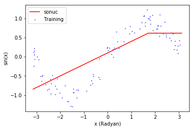
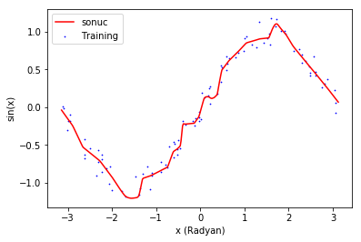

103 - Underfit, overfit ve validation set
Bu yazıdaki tüm kodları jupyter notebook formatında, Suni Dimağ github repository‘sinden çekebilirsiniz.
103 - Underfit, overfit ve validation set
Bu kez ağımızın karmaşıklığını arttırmanın ve azaltmanın ağın performansı üzerindeki etkilerini inceleyek ve doğrulama kümesi’nin (validation set) niçin gerekli olduğunu ögreneceğiz.
|
|
Training ve test kümelerinin oluşturulması
Training ve test kümelerini üreten fonksiyonlarımızda çok fazla değişiklik yok. Geçen derste eklediğimiz bias ve scale değerlerini kaldırdım.
testModel fonksiyonunu ise ideal sinus fonksiyonu yerine training verisini çizecek şekilde güncelledim.
|
|
Validation set
Şu anda tek boyutlu girişimiz ve tek boyutlu çıkışımız olduğundan rahatlıkla grafik çizerek ağımızın ne kadar genelleştirme yaptığını doğrulayabiliyoruz. Ancak bir çok machine learning problemi çok yüksek sayıda boyuta sahiptir ve o kadar da kolay görselleştirilemez. Bu yüzden training set‘in bir kısmını ayırıp eğitim için hiç kullanmayız. Böylece ağın hiç görmediği örnekler için de iyi çalışıp çalışmadığını sayısal olarak ölçebileceğimiz bir aracımız olur.
Deney 1 - Underfit
Modelin veriyi modellemeye yetecek kadar parametresi olmaması underfit denilen olaya, yani bir çeşit aşırı genelleştirmeye yol açar. Bunu test etmek için gizli katmanımızdaki nöron sayısını 1’e indirelim.
|
|
Buradaki validation_split=0.1 parametresiyle de training set’in 10’da birinin validation set olarak ayrılacağını söylüyoruz. Her epoch’tan sonra keras bize normal loss’un dışında artık validation loss’u da bildirecek.
|
|
Train on 90 samples, validate on 10 samples Epoch 1/1000 90/90 [==============================] - 0s - loss: 8.9406 - val_loss: 2.9118 Epoch 2/1000 90/90 [==============================] - 0s - loss: 2.9006 - val_loss: 1.3733 Epoch 3/1000 90/90 [==============================] - 0s - loss: 1.4940 - val_loss: 0.8587 Epoch 4/1000 90/90 [==============================] - 0s - loss: 0.9532 - val_loss: 0.6527 Epoch 5/1000 90/90 [==============================] - 0s - loss: 0.6989 - val_loss: 0.5542 Epoch 6/1000 ... Epoch 996/1000 90/90 [==============================] - 0s - loss: 0.1822 - val_loss: 0.2857 Epoch 997/1000 90/90 [==============================] - 0s - loss: 0.1826 - val_loss: 0.2863 Epoch 998/1000 90/90 [==============================] - 0s - loss: 0.1822 - val_loss: 0.2861 Epoch 999/1000 90/90 [==============================] - 0s - loss: 0.1826 - val_loss: 0.2858 Epoch 1000/1000 90/90 [==============================] - 0s - loss: 0.1822 - val_loss: 0.2852

Model bu kadar az parametreyle ancak tek bir dirseği olan iki çizgi modelleyebildiğinden veriye bu kadar yaklaşabildi.
Eğitimin sonunda training loss’un da validation loss’un da oldukça yüksek bir değerde düşmeyi bıraktığını görüyoruz. Bu ağınızın underfit durumunda olduğuna işaret eder. Ağın performansı hem gördüğü, hem de daha önceki görmediği örnekler için kötü durumda.
Deney 2 - Overfit
Skalanın tam karşı noktasında ise overfit var. Modelimizin karmaşıklığı gerekenden fazlaysa bu kez de model genelleme yapma yetisini kaybeder. Bunu test etmek için elimizde problemle orantısız büyüklükte bir ağ tanımlayalım. Bu ağ 280, 180, 80 ve 80 nörana sahip 4 ayrı gizli katman (hidden layer) içeriyor.
|
|
... Epoch 96/1000 90/90 [==============================] - 0s - loss: 0.0104 - val_loss: 0.0188 Epoch 97/1000 90/90 [==============================] - 0s - loss: 0.0104 - val_loss: 0.0217 Epoch 98/1000 90/90 [==============================] - 0s - loss: 0.0111 - val_loss: 0.0186 Epoch 99/1000 90/90 [==============================] - 0s - loss: 0.0129 - val_loss: 0.0159 Epoch 100/1000 90/90 [==============================] - 0s - loss: 0.0124 - val_loss: 0.0242 Epoch 101/1000 90/90 [==============================] - 0s - loss: 0.0120 - val_loss: 0.0152 Epoch 102/1000 90/90 [==============================] - 0s - loss: 0.0121 - val_loss: 0.0211 Epoch 103/1000 90/90 [==============================] - 0s - loss: 0.0118 - val_loss: 0.0218 Epoch 104/1000 90/90 [==============================] - 0s - loss: 0.0109 - val_loss: 0.0200 Epoch 105/1000 90/90 [==============================] - 0s - loss: 0.0116 - val_loss: 0.0232 Epoch 106/1000 90/90 [==============================] - 0s - loss: 0.0114 - val_loss: 0.0182 ... Epoch 1000/1000 90/90 [==============================] - 0s - loss: 0.0079 - val_loss: 0.0250

Modelimiz bu kez de elindeki çok miktarda parametreyi kullanarak, training set’teki her bir örneğe yaklaşabildiği kadar yaklaşmaya çalıştı. Modelin training loss’u çok küçük olsa da, daha önce görmediğı örneklerde ideal büyüklükte bir ağ’dan daha kötü performans sergiler.
Loss’ları inceleyince de, validation loss’un 100. epoch civarında düşmeyi bıraktığını, training loss’un ise bir süre daha düşmeye devam ettiğini görüyoruz. İşte tam da bu noktada ağımız overfit etmeye başlamış demek ki. İleride overfit olayını engellemek için çeşitli yöntemlerden bahsedeceğim.
Özet
- Validation set olmadan ağın elimizdeki veriyi ne kadar iyi genelleştirdiğini anlamak imkansızdır. Training loss çok düşük olsa da, ağ bizim verdiğimiz örnekleri ezberlemiş (overfit) olabilir.
- Ağ’ın veriyi öğrenmek için yeterli karmaşıklığa sahip olmaması, yeterince ögrenememesine (underfit) yol açar. Bu durum hem training hem de validation loss’un yüksek olmasından anlaşılabilir.
- Ağ’in veriyi ögrenmek için gerekenden fazla karmaşıklığa sahip olmasi, veriyi ezberlemesine (overfit) yol açar. Bu durum training loss düşerken, validation loss’un düşmeye devam etmemesi veya yükselmesiyle anlaşılabilir.
Ödevler
- Veriyi öğrenmek için ideal olan modeli bulun.
- Training set’teki veri miktarını arttırmak, overfit durumunu nasıl etkiliyor?